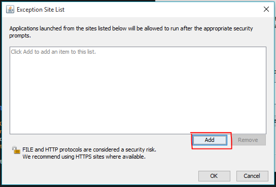

Make sure "Enable Java content in the browser" is checked
Click "Edit Site List..."
Click "Add"

Add the url of the local file to the list (copy the url of this page from your browser's address bar)
Click OK/Apply on all pages
Restart Browser
Allow Java to run in your browser
Click Run on Any Java prompts
Confirm you have the latest Java
Try another browser
Java's portability as a user interface is extremely hampered by the number of steps required by a user to run an application in 2015.
The user would have a much better experience if this application was handled using Javascript, however Javascript does not have as much access to the users computer as Java.
This Improves Javascripts security but decreases its usefulness in applications that require access to printers or other peripherals.
DateManagement does not need these permissions so could be accomplished entirely using Javascript.
Here is an example:
*This was very quickly created as a proof of concept
as such it is not as polished as the applet, contains less methods, and has very little validation
however it does not need any external plugins to run, providing a preferable alternative to Java